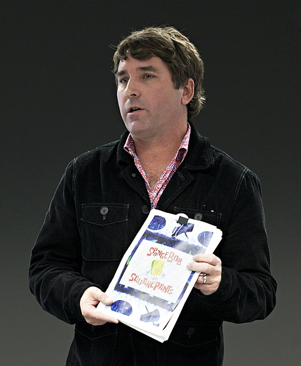

Až do své smrti v roce 2018 sloužil Hillenburg jako výkonný producent.
V průběhu celé historie seriálu, fungoval jako jeho showrunner od roka 1999 až do roku 2004.
Série měla pauzu v roce 2002 poté, co Hillenburg zastavil produkci na show.Sam pracoval na celovečerním filmu The SpongeBob SquarePants Movie.
Jakmile byl film dokončen a třetí sezóna skončila, Hillenburg odstoupil jako showrunner seriálu.
Ačkoli už neměl přímou roli v produkci seriálu, zachoval si poradní roli a zhodnotil každou epizodu.
13. prosince 2014 bylo oznámeno, že Hillenburg se vrátí do série v blíže nespecifikované pozici.
Dne 26. listopadu 2018, ve věku 57 let, Hillenburg zemřel na komplikace amyotrofické laterální sklerózy (ALS), která mu byla diagnostikována v březnu 2017.
Nickelodeon potvrdil prostřednictvím Twitteru , že série bude pokračovat i po jeho smrti.
V únoru 2019 nastupující prezident Brian Robbins slíbil, že Nickelodeon udrží show ve výrobě tak dlouho, dokud bude síť existovat.
